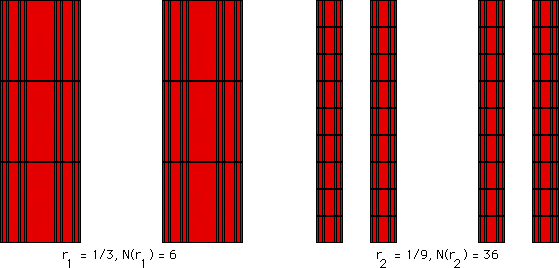

2. B. Box-Counting Dimension
Box-Counting Dimension of the Product of a Cantor Set and a Line Segment
Covering the product of the Cantor set snd line interval with smaller and smaller boxes, we see the patterns illustrated in the table below the picture.

N(1/3) = 6 =
3
1
⋅2
1
N(1/9) = N((1/3)
2
) = 36 =
9⋅4
=
3
2
⋅2
2
and in general
N((1/3)
n
) =
3
n
⋅2
n
.
Return to
Box-Counting Dimension of the Product of a Cantor Set and a Line Segment
.